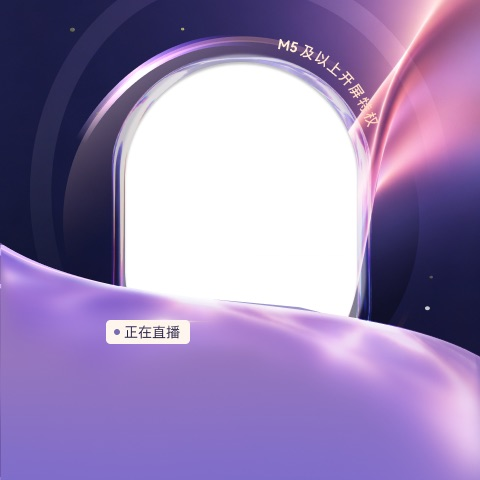
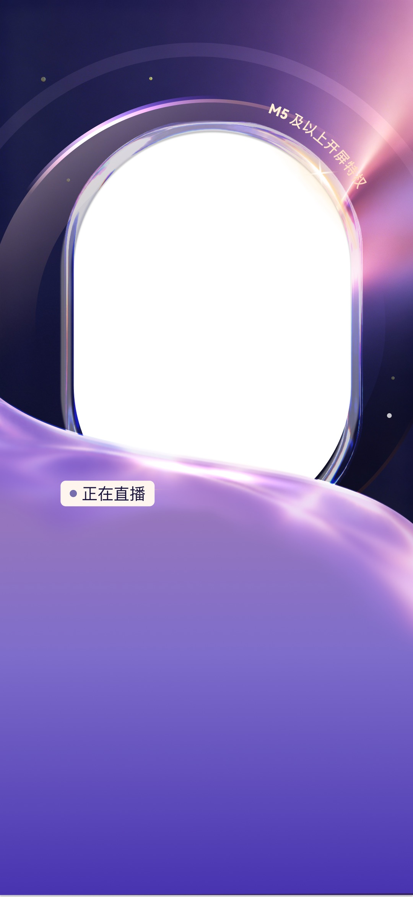
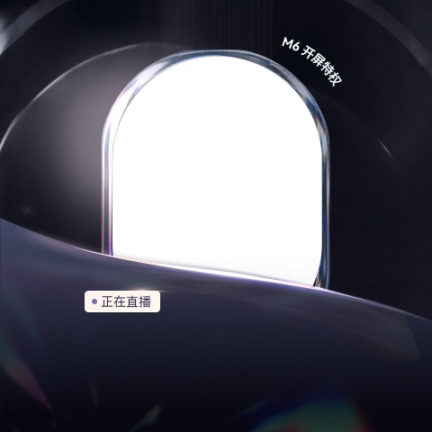
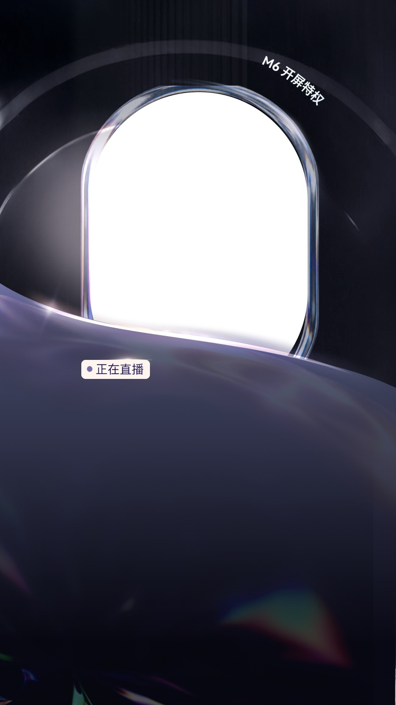
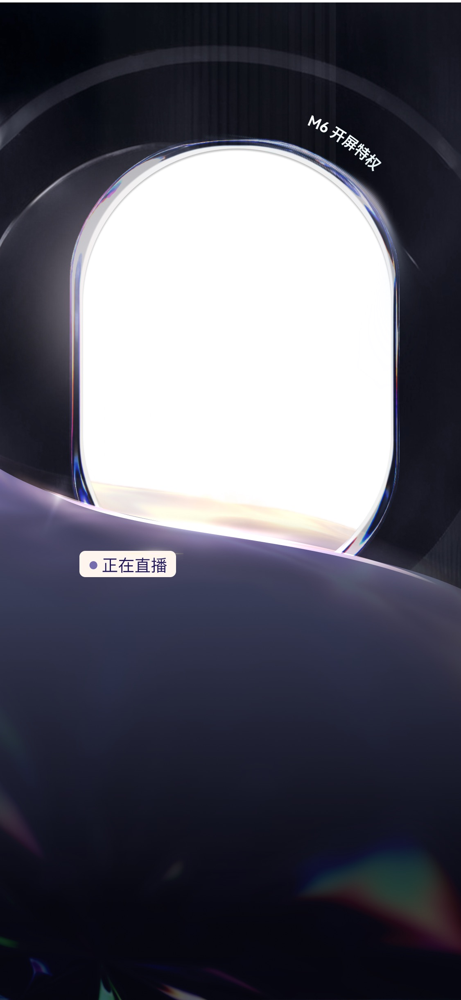
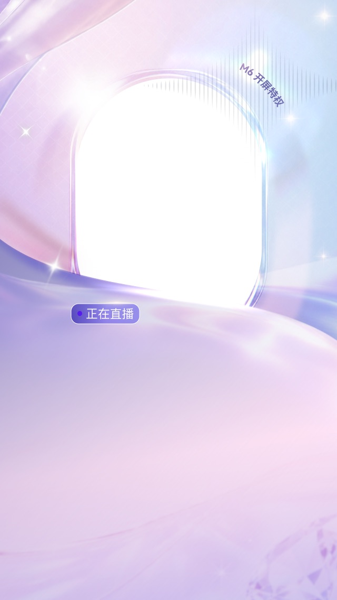

工作总结
- 延续上周七夕集卡风格探索方向，完成 5 张人物原画的视觉细化，围绕不同角色气质、服饰色彩和道具元素形成系列化表达。
- 完成 5 张人物大卡和 1 张卡背设计，将人物形象、卡面边框、色彩区分和七夕主题符号进行统一整合，强化集卡玩法中的识别度与收集感。
- 推进七夕活动 UI 换肤设计，围绕活动首页、排行榜、弹窗、直播间入口与素材组件进行视觉适配，目前整体方向已建立，细节仍在持续优化中。
Internship Weekly Report
本周延续七夕集卡项目继续推进，重点完成 5 张人物原画、5 张人物大卡和 1 张卡背，并同步开展活动 UI 换肤方案设计。目前角色与卡牌体系已进入阶段性收口，UI 换肤仍在持续优化中。
本周在上周风格探索的基础上，进一步从“确定方向”推进到“形成可落地的系列资产”。在人物原画与卡牌设计中，开始更重视角色之间的差异化、卡面统一性和活动玩法识别；在 UI 换肤部分，也逐步理解节日活动视觉不能只停留在装饰层面，还需要兼顾页面信息层级、按钮可读性、直播间场景适配和用户操作路径。
人物与卡牌部分已经形成较完整的系列效果，但仍需要继续检查细节统一性，例如卡面边框、角色比例、文字位置和卡背识别是否足够稳定。UI 换肤仍处于优化阶段，后续需要继续调整页面背景、活动组件、弹窗层级和直播间露出位置，避免节日氛围过强导致核心信息被削弱。
WEEK 4 的重点是将七夕集卡项目从前期风格探索推进到具体资产产出。本周完成了人物原画、人物大卡和卡背的阶段性设计，并同步推进活动 UI 换肤，为后续完整活动页面落地和细节优化提供了较明确的视觉基础。
接下来会继续围绕 UI 换肤进行优化，重点检查活动页面与直播间场景中的信息可读性、按钮状态、装饰元素比例和整体氛围统一性。同时也会继续整理卡牌资产与页面之间的关系，让角色形象、卡面系统和活动界面形成更完整的七夕主题体验。
该项目延续上周“七夕集卡风格探索”的方向，将前期确定的新中式 3D 写实古风风格进一步落到具体角色和卡牌资产中。本周完成 5 张人物原画、5 张人物大卡和 1 张卡背，围绕“玉佩、针线、喜鹊、同心结、河灯”等七夕元素建立角色区分，并通过不同卡面色彩强化系列感。
设计中重点关注人物姿态、服饰材质、卡面轮廓和卡背识别的统一关系，让单张卡牌具有独立记忆点，同时放在整套集卡系统中也能保持一致的节日氛围和视觉秩序。


UI 换肤围绕七夕集卡活动的页面氛围展开，尝试将卡牌元素、红粉色节日氛围、活动按钮、弹窗样式和直播间入口进行统一包装，使活动主视觉能够延展到不同使用场景中。
目前方案仍在优化中，后续会继续调整背景层次、组件边界、按钮质感和页面信息层级，让整体视觉在保持节日感的同时，保证用户能够快速理解活动规则、排名信息和操作入口。

本周从单纯完成视觉输出，进一步转向根据命题组织方案表达。在《音啾》作品中，开始关注角色设定、组件功能、使用场景和参赛展示之间的叙事关系；在七夕集卡探索中，也尝试把过往玩法经验转化为视觉方法，思考角色、道具、卡面和节日符号如何共同服务项目主题。
后续需要继续提升方案说明的精炼度，减少重复表达，让每一张展示图都能更清楚地承担信息传达功能。进行中项目还需要进一步验证角色风格与业务场景的适配度，并在卡面系列化、材质细节和玩法识别上做更完整的推敲。
WEEK 3 以赛事作品收口和新项目探索为主。一方面完成《音啾》参赛方案的视觉整合，另一方面推进七夕集卡方向的初步定位，为后续继续细化角色形象、卡牌系统和活动视觉规范打下基础。
接下来会继续围绕七夕集卡项目深化角色与卡面设计，补充更完整的视觉系列关系，并在后续页面中同步整理项目过程、阶段结果和最终输出，让周报内容既能记录工作进展，也能呈现设计思考。
该作品围绕“陪伴型听歌搭子”展开，将音乐精灵设定为可以停留在手机桌面的小组件伙伴。角色以粉色系、耳机、指挥棒、小云雀伙伴等元素建立亲和、轻盈和音乐感，通过锁屏、时钟组件、倒计时、照片组件和天气组件等场景，呈现它在日常听歌中的陪伴价值。
展示上重点强化作品与比赛命题的连接：它不只是单一角色形象，而是可以被放进桌面组件体系中的情绪陪伴 IP。用户在点亮屏幕、查看日程或听歌时，都能通过角色状态和组件内容获得轻松、可爱的反馈。


该方向基于以往集卡玩法进行延展，将七夕主题与“织女”角色设定结合，尝试建立更完整的国风卡面视觉体系。当前阶段重点探索角色风格、服饰材质、古典道具和卡牌系列化表达，方向定位为新中式 3D 写实古风 CG 风。
视觉思路上，角色以柔和浅色衣裙、轻透纱质、刺绣纹样和玉佩等细节建立东方审美；卡牌元素则结合玉佩、针线、喜鹊、同心结、河灯等七夕符号，为后续玩法包装、卡面分级和活动页面延展提供可继续深化的基础。

通过前两周的学习和项目练习，逐步从“熟悉工具”过渡到“理解项目需求并进行系统化输出”。在设计过程中，对直播场景中的等级权益表达有了更清晰的认识，也开始关注不同尺寸下的视觉重心、信息层级和素材留白，提升了从单张视觉方案延展到完整适配体系的能力。
本阶段在多尺寸延展和风格区分上仍有继续优化空间。后续可在正式输出前更充分地梳理不同等级之间的视觉梯度、材质差异和适配规则；在尺寸适配阶段，也需要进一步加强对文字安全区、主体位置和按钮区域的细节检查，减少因比例变化带来的局部偏移和信息压缩问题。
WEEK 1-2 以学习适应和项目实践为主，一方面完成了新软件与基础流程的熟悉，另一方面通过秀场 UI 项目进行实际设计训练。整体产出覆盖风格探索、等级视觉延展和多尺寸页面适配，为后续更高效地承接正式设计任务打下了基础。
接下来会继续提升对业务场景和设计规范的理解，在承接具体需求时更早介入需求分析与视觉方向判断，形成从风格探索、方案细化到多尺寸落地的完整工作方法。同时，也会持续积累直播、秀场、等级权益等社娱场景的视觉表达经验，提高方案输出的准确性、完整度和落地效率。
该项目围绕秀场高等级用户的开屏权益展示展开，目标是在延续现有 M4-M5 视觉识别的基础上，补充 M5 与 M6 的开屏特权设计。前期先分析原有页面的构图、人物主体、等级标识和直播氛围，再结合新等级的差异化需求进行风格探索。
设计思路上，M5 侧重延续粉紫调金属拉丝风格，通过柔和光效、弧形包裹和梦幻色彩强化亲和力与精致感；M6 则进一步提升稀缺感和尊贵感，分别尝试黑金调金属镶钻风格与亮色钻石质感风格，通过金属材质、钻石元素、光束和暗亮对比拉开等级层次。
初版阶段主要集中在三种风格方向的探索，先验证人物主体、背景材质、等级标签和底部信息区的关系。后续在最终版中进一步补充 M5、M6 权益页关系、设计元素拆解和完整尺寸展示，让方案从单张视觉效果推进到更完整的项目表达。最终完成三个页面方向，并将每个方向延展为六个常用尺寸，保证在不同屏幕比例下仍能保持主体突出、信息清晰和品牌露出完整。














